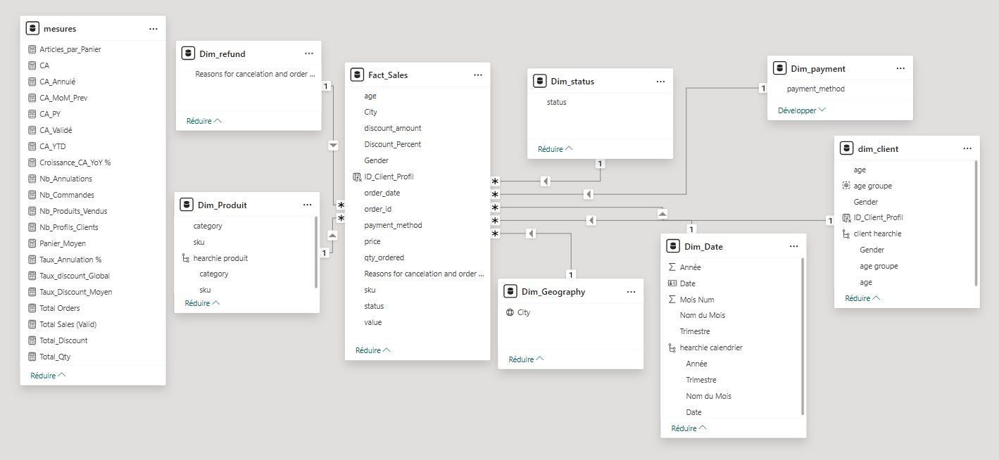
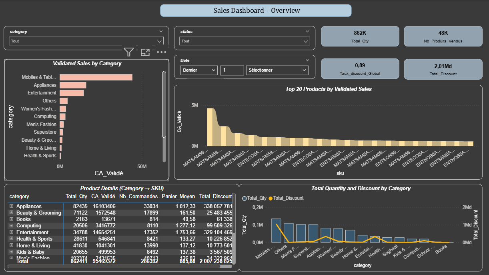
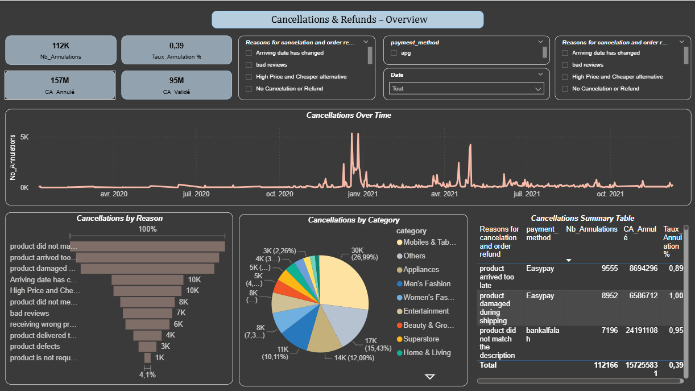

Carrefour Sales Analysis
Projet réalisé en binôme avec MOUNJI MALAK
Dashboard analytique Power BI
Ce projet de Business Intelligence vise à transformer des données brutes de ventes Carrefour en insights analytiques exploitables grâce à un pipeline ETL Python, une structuration inspirée du data warehousing, un schéma étoile et des dashboards interactifs Power BI.
Liens & livrables
Stack technique
- ETL : Python + Pandas pour le nettoyage et la transformation
- Data Model : modèle analytique Power BI en schéma étoile
- BI : mesures DAX, KPIs, filtres, dashboards interactifs
Livrables
- Jeu de données brut
- Dataset nettoyé
- Template Power BI
- Dashboard analytique final
Vue d’ensemble
Objectif du projet
- Analyser les ventes validées et annulées
- Mesurer l’impact des remises sur le chiffre d’affaires
- Comparer les performances par catégorie, ville et moyen de paiement
- Suivre les tendances temporelles et les comportements clients
- Centraliser les KPIs dans une solution BI claire et exploitable
Pipeline analytique
Le projet suit un workflow complet de Business Intelligence :
ETL & préparation des données
Avant l’analyse dans Power BI, les données ont été préparées via un script ETL en Python afin de garantir leur cohérence, leur lisibilité et leur exploitabilité.
Extract
- Import du fichier CSV source contenant les transactions Carrefour
- Chargement des colonnes de vente, client, paiement, date et catégorie
- Gestion de l’encodage CSV pour éviter les erreurs de lecture
Transform
- Nettoyage des textes et standardisation des valeurs
- Correction et conversion des dates
- Suppression de colonnes inutiles
- Normalisation des champs mois / année
- Création d’un dataset prêt pour l’analyse Power BI
Data Warehousing
Même sans entrepôt de données enterprise, le projet suit une logique inspirée du data warehousing avec séparation claire des couches de données.
Raw Layer
Données brutes d’origine, non modifiées, servant de base au pipeline ETL.
Processed Layer
Dataset nettoyé, structuré et prêt à alimenter le modèle analytique.
Reporting Layer
Couche BI construite dans Power BI avec KPIs, visuels et exploration interactive.
Schéma étoile
Le modèle de données a été structuré en schéma étoile pour améliorer la performance analytique, simplifier les relations et faciliter les calculs DAX.
Table de faits
Fact_Sales: ventes, quantités, remises, commandes, profils clients
Tables de dimensions
Dim_DateDim_Produitdim_clientDim_GeographyDim_paymentDim_statusDim_refund
Avantages du modèle
- Relations plus claires
- Calculs DAX plus simples
- Navigation analytique plus flexible
- Meilleure lisibilité du modèle
- Structure standard en BI / data warehouse

Mesures DAX & KPIs
Plusieurs mesures DAX ont été créées pour transformer les données transactionnelles en indicateurs business directement exploitables.
KPIs principaux
Total Sales (Valid)Total OrdersTotal QtyTotal DiscountCA_ValidéCA_AnnuléTaux_Annulation %Taux_discount_Global
Analyses avancées
CA_MoM_PrevCA_PYCA_YTDCroissance_CA_YoY %Articles_par_PanierTaux_Discount_Moyen
Dashboards développés
Le projet a été structuré en plusieurs vues analytiques afin de couvrir différentes dimensions métier : ventes, remises, annulations, paiements, géographie, comportement client et tendance temporelle.
Vues principales
- Sales Dashboard
- Transaction Details
- Discounts & Promotions
- Cancellations & Refunds
- Payment Analysis
Vues complémentaires
- Geography Analysis
- Customer Insights
- Times Dashboard
Screenshots
Aperçu des principales pages du dashboard Power BI.

Sales Dashboard
Vue synthétique des ventes, quantités, catégories et remises.

Transaction Details
Détail transactionnel avec filtres, commandes et profils clients.

Discounts & Promotions
Analyse des remises par catégorie, paiement et évolution temporelle.

Cancellations & Refunds
Suivi des annulations, causes dominantes et impact business.

Payment Analysis
Comparaison des moyens de paiement, commandes et taux d’annulation.

Geography Analysis
Analyse des performances commerciales par ville et zone.

Customer Insights
Segmentation clients par genre, tranche d’âge et volume d’achats.

Times Dashboard
Tendances temporelles, croissance, cumul annuel et évolution mensuelle.
Résultats & insights
Résultats
- Vision centralisée des ventes, remises, annulations et commandes
- Comparaison claire des performances par catégorie
- Analyse des moyens de paiement et de leur comportement
- Suivi des tendances temporelles et des variations mensuelles
- Lecture rapide des KPIs grâce aux indicateurs DAX
- Modèle BI structuré et scalable pour futures extensions
Insights clés
- Identification des catégories les plus performantes
- Mesure de l’impact des remises sur le chiffre d’affaires
- Détection des villes les plus contributrices
- Analyse des motifs d’annulation dominants
- Segmentation clients selon genre, âge et panier